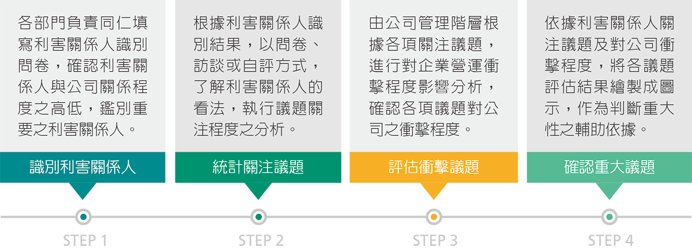
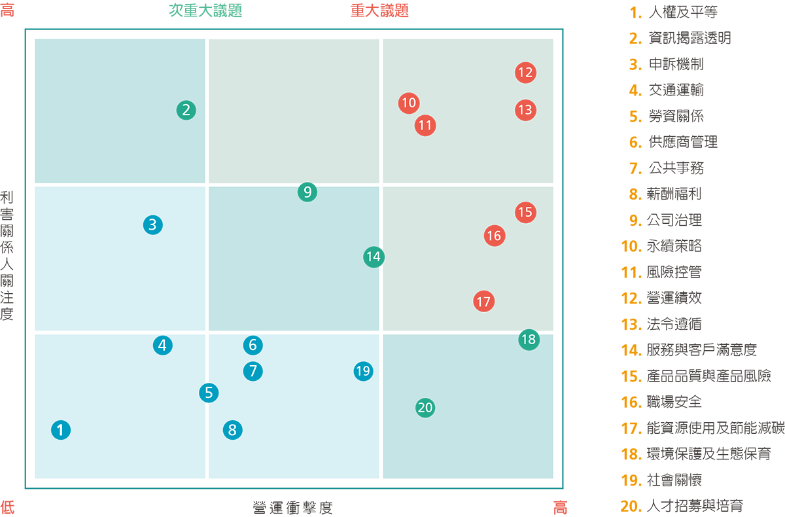

永續議題管理
台泥針對與利害關係人之溝通及議和的內容，作為重大議題評估之重要依據，執行相關程序。參考GRI G4永續性報告指南及產業特性，擬定重大議題調查問卷，期望能透過利害關係人之議和結果，找出利害關係人關注之重大議題，納入公司營運之重要考量，同時也針對具有重大性的議題，予以優先處置與回應，以符合利害關係人之期望。
利害關係人與重大議題評估流程

鑑別利害關係人
為完整識別利害關係人，並確認利害關係人與台泥之關係程度，台泥檢視集團內部與外部，識別2015年與營運相關之各利害關係人類別，再依據國際標準AA1000 利害關係人議合之原則，使用其五大面向評估方法，考量責任、影響力、張力、多元觀點及依賴性，評估各類利害關係人與台泥之關係程度。
2015利害關係人類別列表(依關係程度高至低排列)
| 2015利害關係人 | 對台泥之意義 |
|---|---|
| 政府機關 | 台泥遵循政府機關相關規範，同時積極配合政策施行，並提供產業經驗供施政者參考 |
| 客戶 | 為顧客提出多樣化的解決方案，提供雞尾酒式客製服務是台泥客戶服務的宗旨 |
| 股東 | 股東是督促台泥追求穩定成長、持續獲利的重要角色 |
| 員工 | 員工是台泥持續進步向前的關鍵因素之一 |
| 銀行/保險公司 | 銀行/保險公司為台泥營運中的重要夥伴 |
| 鄰近社區 | 透過關懷與聆聽鄰近社區，台泥能夠更適切的經營環境保護 |
| 供應商/承攬商 | 永續發展需要供應商/承攬商的共同合作與協助 |
利害關係人溝通
台泥以多元溝通管道與公開透明的方式揭露資訊，以確保與利害關係人之溝通能獲得有效且良好之成果。此外，亦重視各利害關係人對公司之期許，針對溝通過程所收集之關注議題，納入公司營運及推動企業永續發展策略之參考，得以讓台泥在永續經營之推動上更臻完善，落實企業社會責任。台泥相信，唯有與利害關係人建立順暢與有效的溝通管道，才得以掌握市場、經濟、社會及環境之脈動，讓營運持續向上提升、創造價值。
| 利害關係人 | 議題 | 溝通方式與頻率 | 回應章節 |
|---|---|---|---|
| 政府機關 | 永續策略公司治理風險控管法令遵循能資源使用與節能減碳環境保護及生態保育職場安全 |
|
3 公司簡介4 公司治理 |
| 客戶 | 服務與客戶滿意度產品品質與產品風險 |
|
5 低碳產品8-1 客戶服務 |
| 股東 | 永續策略公司治理風險控管資訊揭露透明營運績效 |
|
4 公司治理 |
| 員工 | 永續策略公司治理風險控管資訊揭露透明法令遵循申訴機制營運績效人才招募與培育薪酬福利勞資關係人權及平等職場安全服務與客戶滿意度產品品質與產品風險 |
|
6 最佳職場 |
| 銀行／保險公司 | 永續策略公司治理風險控管資訊揭露透明法令遵循營運績效 |
|
4 公司治理6 最佳職場 |
| 鄰近社區 | 環境保護及生態保育社會關懷交通運輸 |
|
7 環境管理9 社會參與 |
| 供應商／承攬商 | 永續策略風險控管法令遵循營運績效供應商管理 |
|
8-2 供應商管理 |
關注議題與衝擊評估
針對利害關係人鑑別結果，向重要之利害關係人發出問卷，回收有效問卷49份，進行關注議題之統計分析，再由公司高階長官針對利害關係人關注議題進行衝擊程度評估，決定議題之優先順序與列為重大性之議題。2015年共有7項重大性議題，於本報告書中進行完整揭露。而在次重大議題部分，除依關注議題統計分析結果進行鑑別外，參考近年永續發展趨勢及營運情形，將供應商管理亦納入次要性議題，故本年度次重大議題共有5項，採部分揭露方式，以適切展現台泥之永續績效。

重大議題與考量面之對應
依衝擊分析後確認之重大議題，將其對應至GRI G4考量面，由各部門確認應揭露之指標、管理方針及績效成果，完成本次報告書撰寫成果。相關議題之對應考量面、管理方針如下表所示：
| 議題類別 | 重大議題 | 重大考量面 | 管理方針 | 對應章節 |
|---|---|---|---|---|
| 公司治理 | 風險控管 | (一般標準揭露) | - | 4.4 風險類型 |
| 永續策略 | (一般標準揭露) | - | 董事長的話 | |
| 法規遵循 | 法規遵循(環境)法規遵循(環境)法規遵循(產品責任) |
|
4.3 誠信經營 | |
| 經濟議題 | 營運績效 | 經濟績效間接經濟衝擊 |
|
4.5 財務績效9.1 社會關懷 |
| 環境議題 | 能資源使用及節能減碳 | 原物料能源水排放廢污水和廢棄物交通運輸 |
|
7.1 環境管理 |
| 勞工人權議題 | 職場安全 | 職業健康與安全 |
|
6.2 安全照顧 |
| 產品責任議題 | 產品品質與產品風險 | 產品及服務標示 |
|
5.1 產品介紹 |
| 議題類別 | 次重大議題 | 次重大考量面 | 管理方針 | 對應章節 |
|---|---|---|---|---|
| 公司治理 | 公司治理 | 反貪腐(一般標準揭露) |
|
3 公司簡介 |
| 資訊揭露透明 | (一般標準揭露) | - | ||
| 環境議題 | 環境保護及生態保育 | 生物多樣性整體情況(環境) |
|
9.2 永續生態7 環境管理 |
| 勞工人權議題 | 人才招募與培育 | 經濟績效員工多元化與平等機會訓練與教育勞僱關係投資 |
|
6 最佳職場 |
| 產品責任議題 | 服務與客戶滿意度 | 產品及服務標示行銷溝通顧客隱私 |
|
8.1 客戶服務 |
| 供應商管理 | 供應商管理 | 供應商環境評估供應商勞工實務評估供應商社會衝擊評估採購實務 |
|
8.2 供應商管理 |
價值鏈有效整合
| 考量面 | 組織內 | 組織外 | ||||||
|---|---|---|---|---|---|---|---|---|
| 台泥 | 集團內其他公司 | 客戶 | 股東 | 銀行/保險公司 | 供應商 | 鄰近社區 | ||
| 重大考量面 | 經濟績效 | ● | ● | ● | ||||
| 職業健康與安全 | ● | |||||||
| 法規遵循(社會) | ● | ● | ||||||
| 原物料 | ● | ● | ||||||
| 能源 | ● | |||||||
| 水 | ● | |||||||
| 排放 | ● | |||||||
| 廢污水和廢棄物 | ● | ● | ||||||
| 交通運輸 | ● | ● | ||||||
| 法規遵循(環境) | ● | ● | ||||||
| 產品及服務標示 | ● | ● | ||||||
| 法規遵循(產品責任) | ● | ● | ||||||
| 次重大考量面 | 生物多樣性 | ● | ● | |||||
| 整體情況(環境) | ● | ● | ||||||
| 員工多元化與平等機會 | ● | |||||||
| 訓練與教育 | ● | |||||||
| 勞僱關係 | ● | |||||||
| 行銷溝通 | ● | ● | ||||||
| 顧客隱私 | ● | ● | ||||||
| 供應商環境評估 | ● | ● | ||||||
| 供應商勞工實務評估 | ● | ● | ||||||
| 供應商社會衝擊評估 | ● | ● | ||||||